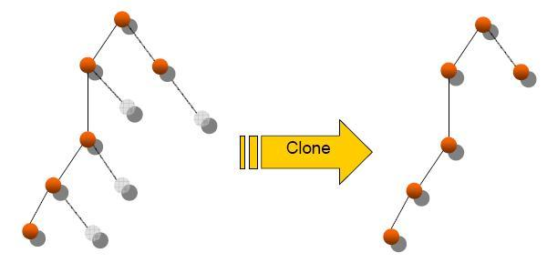

hibernate4gwt
http://hibernate4gwt.sourceforge.net |
hosted by |
|
The
problem Partial
loading of POJO with Hibernate is a current usage to prevent loading of
unnecessary data. The persistence library deals with these unloaded
associations by handling proxies. Trying to
pass such a partially loaded POJO to GWT will raise an exception, since
the
Java->Javascript compiler is not able to serialize the nested
proxies. So you
cannot send a partially loaded Hibernate POJO to the GWT client side. The
general
solution: Data Transfer Object and Dozer The current
common solution to this issue is to use Dozer to
clone the Hibenate
POJO. It
partially solves the type issue but
raises a
new one on partially loaded POJO. Depending
on the Hibernate session state (open or closed), Dozer will load the
entire POJO
association graph or raise a LazyIntialisationException. Indeed, by
default
Dozer tries to clone all properties: if the session is opened, they are
lazy
loaded, otherwise Hibernate throws an exception. Well,
the
workaround mostly used is to define clone configuration with Dozer that
only
copy the loaded associations:  This
solution works, but it poses some issues:
The clone
POJO can be manipulated by the GWT layer painlessly. For update,
the clone POJO must be merged with an existing Hibernate one to prevent
lazy
associations to be replaced by null (which would lead Hibernate to
delete the
association instead of leaving it unchanged). |
|
Copyright 2007. All Rights Reserved
|